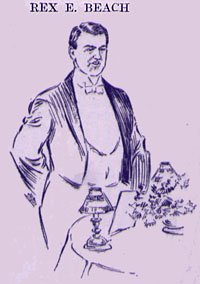

|  REX E. BEACH said: Mr. Toastmaster, Ladies, and Gentlemen: This is a remarkable occasion for me on more than one account. In part, because it is the first literary banquet I ever attended where I did not have to look up the names of the books written by the guest of honor. I had planned a speech for this evening showing to Mr. Clemens the remarkable improvement and refinement which has occurred in American humor since the day in which he wrote Tom Sawyer and Innocents Abroad, but I will be unable to deliver it, because the man who was to bring the slapsticks and the bladder has not yet arrived. I once tried this modern American ten, twent', thirt' Keith circuit brand humor at a bohemian dinner in South Bend. I had a large assortment of near-jokes of my own making, and arranged for the gentleman who sat next to me to rise up and swat me in the jowl with a folded newspaper at the end of each one. I had just finished explaining "Why the chicken crossed --" which I consider one of my best jokes -- perhaps some of you have never heard it? -- when he found that he had forgotten his newspaper. Therefore, he laid violent hands upon the only thing convenient, which happened to be a loaf of French bread, hard-baked, and with a bark as thick as the shell of a lobster. I never suspicioned until some time the next day that his man held the highest batting average of any man on the South Bend Baseball team. Perhaps the perusal at an early age of Mr. Clemen's Roughing It had much to do with my inclination to see the West -- that is, the West of his and Bret Harte's day. At any rate, I went in search of it, but it had moved. In my quest of the frontier, I followed it on and on, up into the arctics, where it had paused long enough for me to catch up. It was the same frontier of Buck Fanshawe and Hank Monk, only now it had chilblains, and, in place of a stage-coach, Hank drove a dog team. Its heart was as warm and its humor as keen, however. I shall not forget the first mining-camp I struck. It consisted of about 1500 souls -- and nineteen saloon-keepers. Outside of these nineteen well-to-do people, the rest were broke, and comprised the floating population, so called because alcohol is lighter than water. It was not a bad camp, however, on the whole -- one got two drinks for $1, and the bartender supplied a horse-blanket to throw a fit on. One day a stranger approached me with an air of great mystery and said: "Young fellow, I ben watchin' you, an I like your style. You're a hustler." There is no greater compliment that can be paid to a man in Alaska than to say that he is a hustler, and, inasmuch as I had never gazed at close range into the disgusting visage of hard work at that time, I was pleased. "I am organizin' a secret expedition, and I want jest one more man to fill out the number. You're on." "What's the layout?" said I. "Well, I'm takin' a few of the best men I can find up the river, to bring down a raft of saw-logs. I can't say no more, or else every man in camp will want to go along, and I figger I've told you too much now, only you look like a man who can keep his mouth shut." I assured him that I was the human hunting-case watch, and never opened my face until I was pressed. Then I asked him what wages he paid. "Five dollars a day and board." said he. "I won't go for less than ten," said I; "five dollars is too small," whereupon we argued, and after considerable haggling, finally compromised on five dollars a day and board. So one rainy night I took my roll of blankets and crept onto a river steamer, thankful for the honor conferred upon one so young. Now in this desperate band there were the boss, whom I now entitle a humorist, six tall unkempt Oregon woodsmen skulking behind heavy growths of whiskers, also three young men of about my own age and inexperience. Of these latter on was an ex-football hero with legs like iron pillars, another had captained a Yale crew, and did not know how strong he really was, while the third had even a smaller cranial development than any of us, which I now consider truly remarkable. He was a monster, physically, however, so large that if he ever stood still on a street corner a policeman would tap him on the shoulder and say, "No groups, please." He had the biceps of a blacksmith, and was named Fagan-- not the Fagan who afterwards owned Collier's Magazine. I asked him what business he had been engaged in before coming north and he said, "Rubber." "Indeed," said I; "Peru or Brazil?" "Neither," said he; "Turkish bath." That is where he got his muscular development, and he needed it too, because, instead of being sent to the forest to sing and slash our way through the stately timber to the music of ringing steel and clashing tree trunks, we were assigned to a shameful task. We had no sooner pitched our camp in the heart of the wilderness and many miles up a strange river, than this comedian boss of ours sent the six Oregonian woodsmen out into the forest with their axes, and for us clean-shaven, intellectual youths he unpacked four strange, unmannerly, and clanking tools, the like of which we had never seen before. He called them peaveys, or cant-hooks, and said that although they might seem awkward at first, in a week we would be able to eat soup with them. Then he told us what to do. It was work which in the early days had been performed by ox teams, but in later years had been done by donkey-engines and steel cables. It consisted of seizing logs as they were felled with our cant-hooks, carrying them to the river bank, and dropping them in. Now these logs weighed thousands of tons apiece, and grew at immense distances back from the river. Dense clouds of mosquitoes feasted luxuriously on our white meat, while, added to our other troubles, we were so far north that we constantly tripped and stumbled over the arctic circle. Inasmuch as this sport had never been included in any college curriculum -- Fagan assured us that it did not even appear on the Bryant & Stratton bill of fare -- we mutinied, but the cook cut off our rations, so that we were forced to browse on willow buds and wild berries. We could not run away, because we were hundreds of miles out in the wilderness and had no rowboat. So we stayed, and lifted and grunted and strained until our eyes hung out like loose overcoat buttons. Gradually our atavism became complete. We reverted to beasts of burden, chewing our cuds, flapping our ears at the insects, and sleeping standing up. The boss put a bell on Fagan, and we followed him patiently to and fro through the forest, until we fondled every heavy piece of timber which grew in that whole valley. Then he laid us onto the raft, bedded us down, and took us back to camp. After that experience I felt that I had just been cast for gentler and nobler things, so I adopted journalism. In other words, I reverted to type. I came about in this way: One day I inadvertently strolled into a saloon -- accent on the inadvertently -- and noticed behind the bar a typewriter. It was the only typewriter in Alaska at that time, and the owner used it for a cash register. I borrowed it and started a newspaper; used to manifold ten copies at a time and sell them for $1 apiece. Mr. Clemens states in his Journalism in Tennessee that he went South for his health. I came North with mine, and, inasmuch as the profession carried no heaven-born message for me, I proceeded to insulate the residents from their money in every way possible, and was succeeding fairly well when forced to close out my business, owing to a mistaken sense of humor. That is, I made the mistake of attributing a sense of humor to a man who didn't possess it. He was a thin little bartender, hollow-chested, with the cough of a switch-engine on a frost morning, and legs like a piece of Chippendale furniture. I printed a highly imaginative story to the effect that a Swede had entered his place one day and called for a drink of warm water and good alcohol. He got it, went away, and died. Upon being questioned concerning this, the bartender remarked with great astonishment: "Well, now, ain't that too bad! I though he said 'warm water and wood alcohol.'" As I say, the man was unbalanced. He had no sense of humor, and that joke went past him like a train past a tramp. The next day he crept up to my cabin, all out of breath an coughing considerably; then, after he had raised up, he began to reason with me. As I recall it now, he used a pick-handle, but I am not positive, because my memory is blurred and indistinct, and I have only one clear-cut and vivid recollection, which is of witnessing a marvellous display of Northern Lights in the daytime, which is considered a remarkable phenomenon even in that latitude. After he had gone I tottered forth and changed a few letters in the motto which had stood so boldly over the door to the printing-office. When I came in, instead of reading "Honest, Tried and True, " it said, "Honest, Tired, and Through." |